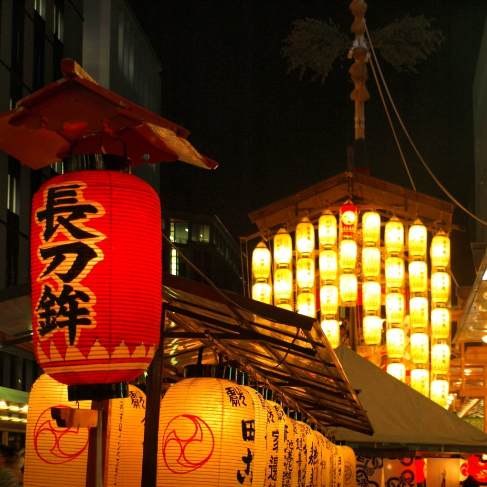
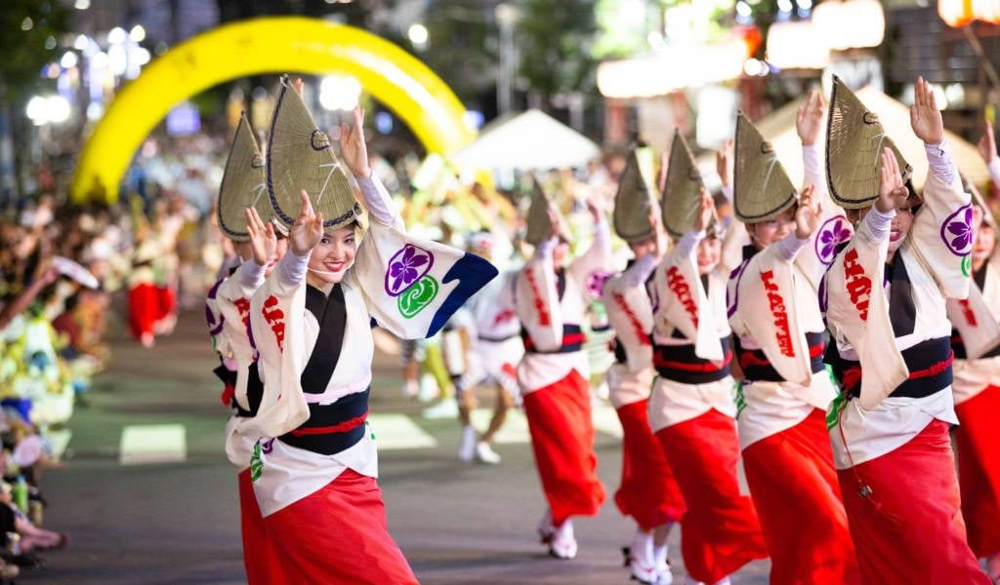
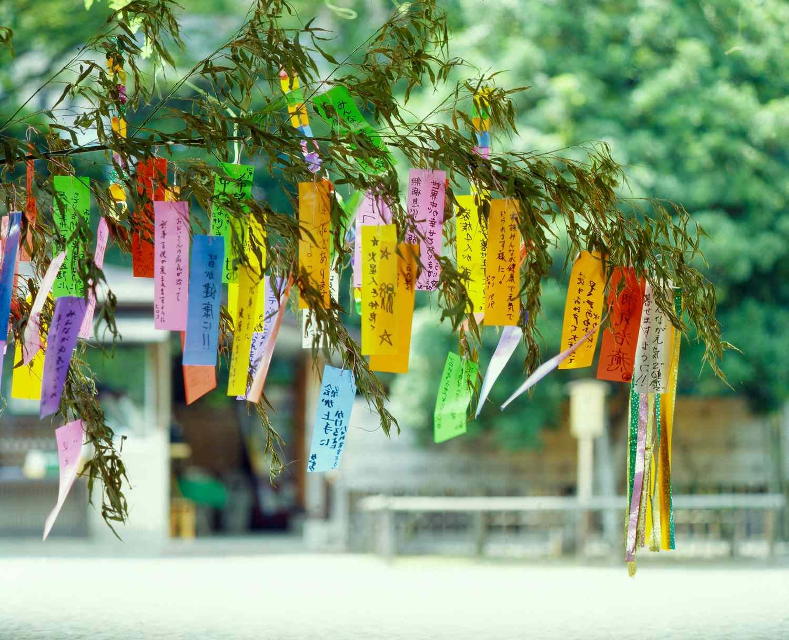
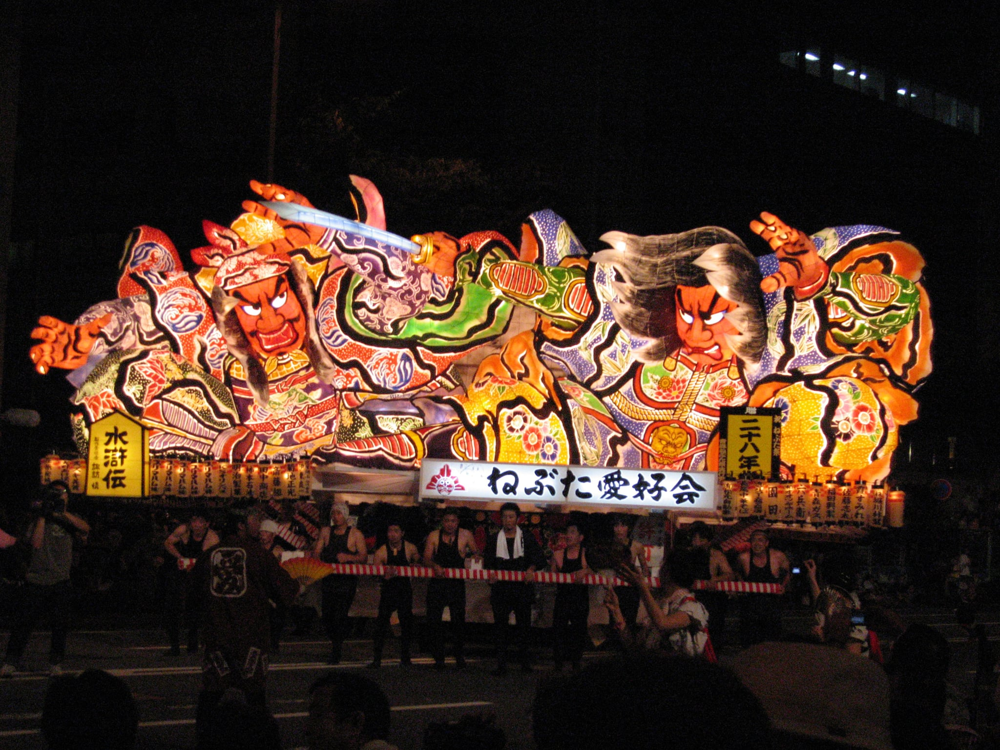
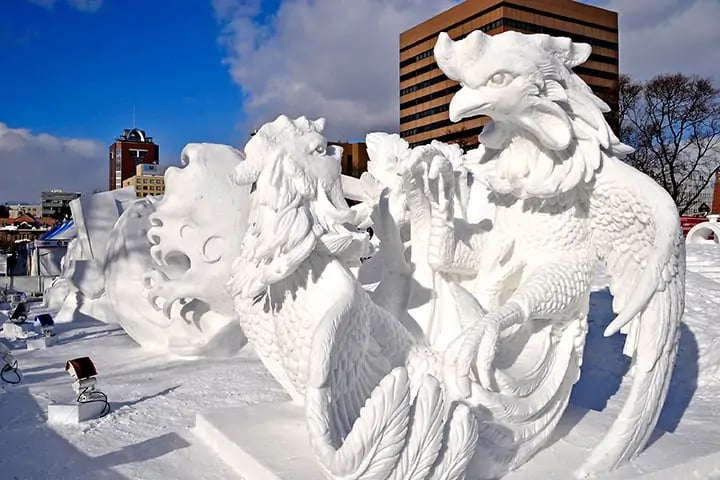
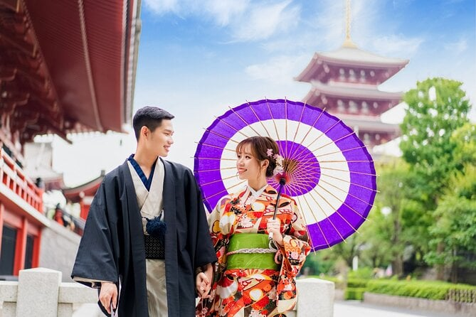
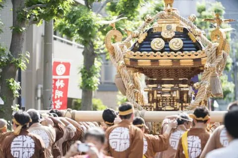
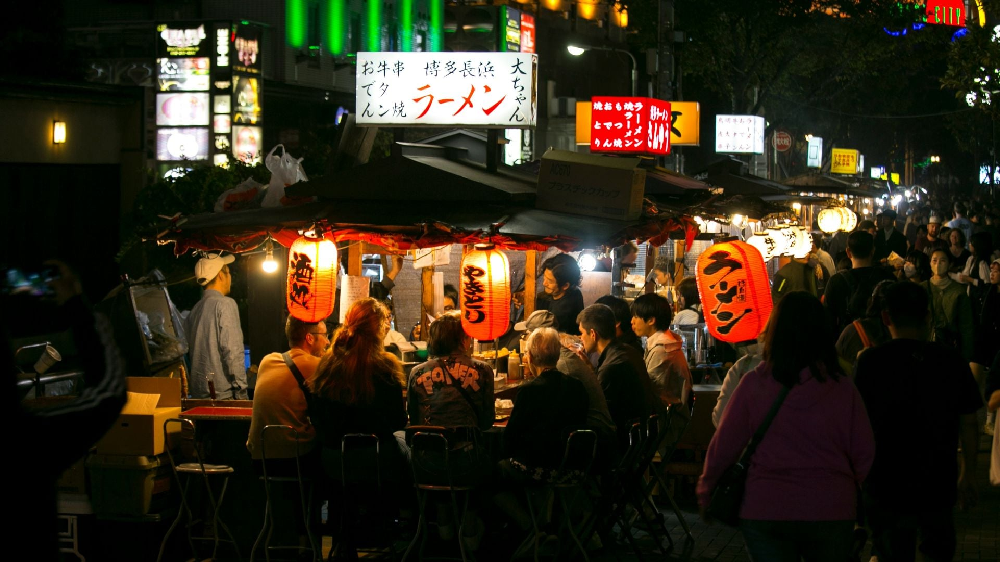
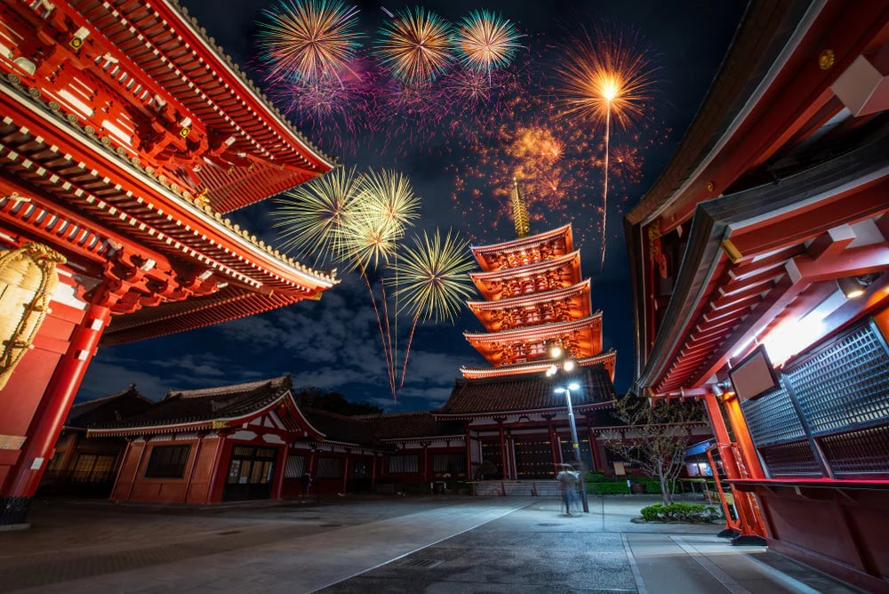

Japanese Festivals
Japanese festivals, called matsuri, are colorful celebrations held throughout the year to honor gods, seasons, and local traditions.
They often include lively parades, traditional music and dances, people wearing yukata or kimono, and delicious street food. These festivals bring communities together and show Japan’s rich culture and history.
Popular Japanese Festivals
Gion Matsuri

Gion Matsuri is a July festival in Kyoto known for large decorative floats and Shinto traditions.
Awa Odori

Awa Odori is a dance festival in Tokushima where people perform traditional group dances.
Tanabata

Tanabata is a festival celebrating the legend of two stars, where wishes are written on paper.
Nebuta Matsuri

Nebuta Matsuri is a summer festival in Aomori featuring giant illuminated lantern floats.
Sapporo Snow Festival

Sapporo Snow Festival is a winter festival famous for huge snow and ice sculptures.
Festival Traditions & Customs

Yukata
Light cotton kimonos worn during summer festivals, adding color and tradition to the celebrations.

Mikoshi
Portable shrines carried through streets to bring good fortune and blessings to the community.

Festival Food (Yatai)
Street stalls selling favorites like takoyaki, yakisoba, taiyaki, and shaved ice.

Fireworks (Hanabi)
A key feature of many summer festivals, symbolizing joy, celebration, and fleeting beauty.